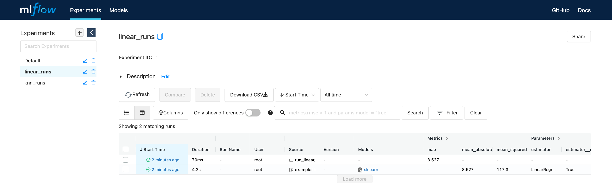
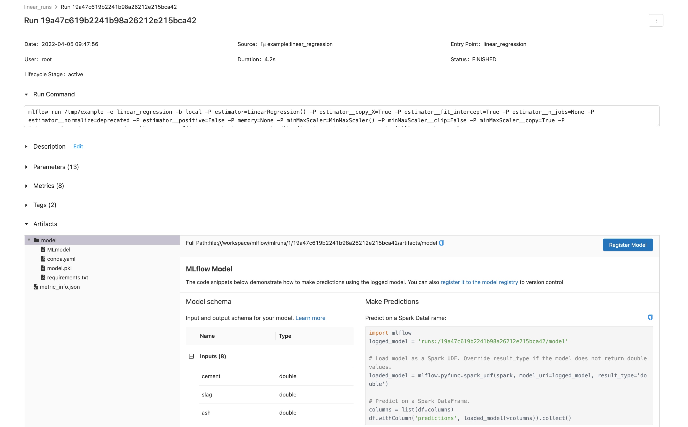
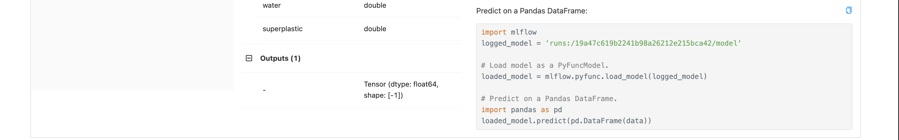

Proyectos con varios modelos
Ultima modificación: Mayo 14, 2022
Diretorio para almacenar el proyecto
[1]:
#
# Crea una carpeta para el proyecto. El proyecto también puede estar alojado en
# un repositorio de GitHub.
#
!rm -rf mlruns
!rm -rf /tmp/example
!mkdir /tmp/example
Código en Python
[2]:
%%writefile /tmp/example/common.py
# ---------------------------------------------------------------------------------------
#
# Codigo comun a todos los modelos
#
# ---------------------------------------------------------------------------------------
def load_data():
import pandas as pd
url = "https://raw.githubusercontent.com/jdvelasq/datalabs/master/datasets/concrete.csv"
df = pd.read_csv(url)
y = df["strength"]
x = df.copy()
x.pop("strength")
return x, y
def make_train_test_split(x, y):
from sklearn.model_selection import train_test_split
(x_train, x_test, y_train, y_test) = train_test_split(
x,
y,
test_size=0.25,
random_state=123456,
)
return x_train, x_test, y_train, y_test
def eval_metrics(y_true, y_pred):
from sklearn.metrics import mean_absolute_error, mean_squared_error, r2_score
mse = mean_squared_error(y_true, y_pred)
mae = mean_absolute_error(y_true, y_pred)
r2 = r2_score(y_true, y_pred)
return mse, mae, r2
def report(estimator, mse, mae, r2):
print(estimator, ":", sep="")
print(f" MSE: {mse}")
print(f" MAE: {mae}")
print(f" R2: {r2}")
def log_metrics(mse, mae, r2):
import mlflow
mlflow.log_metric("mse", mse)
mlflow.log_metric("mae", mae)
mlflow.log_metric("r2", r2)
def make_pipeline(estimator):
from sklearn.pipeline import Pipeline
from sklearn.preprocessing import MinMaxScaler
pipeline = Pipeline(
steps=[
("minMaxScaler", MinMaxScaler()),
("estimator", estimator),
],
)
return pipeline
Writing /tmp/example/common.py
Modelo de regresión lineal
[3]:
%%writefile /tmp/example/run_linear_regression.py
def run():
import sys
import common
from sklearn.linear_model import LinearRegression
import mlflow
x, y = common.load_data()
x_train, x_test, y_train, y_test = common.make_train_test_split(x, y)
mlflow.sklearn.autolog()
estimator = common.make_pipeline(
estimator=LinearRegression(),
)
with mlflow.start_run():
estimator.fit(x_train, y_train)
mse, mae, r2 = common.eval_metrics(
y_true=y_test,
y_pred=estimator.predict(x_test),
)
common.log_metrics(mse, mae, r2)
common.report(estimator, mse, mae, r2)
if __name__ == "__main__":
run()
Writing /tmp/example/run_linear_regression.py
Modelo de regresión con vecinos más cercanos
[4]:
%%writefile /tmp/example/run_k_neighbors_regressor.py
def run():
import sys
import common
from sklearn.neighbors import KNeighborsRegressor
import mlflow
x, y = common.load_data()
x_train, x_test, y_train, y_test = common.make_train_test_split(x, y)
n_neighbors = int(sys.argv[1])
mlflow.sklearn.autolog()
estimator = common.make_pipeline(
estimator=KNeighborsRegressor(n_neighbors=n_neighbors),
)
with mlflow.start_run():
estimator.fit(x_train, y_train)
mse, mae, r2 = common.eval_metrics(
y_true=y_test,
y_pred=estimator.predict(x_test),
)
common.log_metrics(mse, mae, r2)
common.report(estimator, mse, mae, r2)
if __name__ == "__main__":
run()
Writing /tmp/example/run_k_neighbors_regressor.py
MLproject
[5]:
%%writefile /tmp/example/MLproject
name: proyecto de demostracion
entry_points:
linear_regression:
command: 'python3 run_linear_regression.py'
k_neighbors_regressor:
parameters:
n_neighbors: {type: integer, default: 5}
command: 'python3 run_k_neighbors_regressor.py {n_neighbors}'
Writing /tmp/example/MLproject
Creación de los experimentos
[6]:
!mlflow experiments create -n linear_runs
Created experiment 'linear_runs' with id 1
[7]:
!mlflow experiments create -n knn_runs
Created experiment 'knn_runs' with id 2
Ejecución de los experimentos
[8]:
#
# Ejecución del modelo de regresión lineal
#
!mlflow run --no-conda -e linear_regression --experiment-id 1 /tmp/example
2022/04/05 14:47:56 INFO mlflow.projects.utils: === Created directory /tmp/tmp5wtlprhq for downloading remote URIs passed to arguments of type 'path' ===
2022/04/05 14:47:56 INFO mlflow.projects.backend.local: === Running command 'python3 run_linear_regression.py' in run with ID '19a47c619b2241b98a26212e215bca42' ===
2022/04/05 14:47:58 WARNING mlflow.utils.autologging_utils: MLflow autologging encountered a warning: "/usr/local/lib/python3.8/dist-packages/mlflow/models/signature.py:129: UserWarning: Hint: Inferred schema contains integer column(s). Integer columns in Python cannot represent missing values. If your input data contains missing values at inference time, it will be encoded as floats and will cause a schema enforcement error. The best way to avoid this problem is to infer the model schema based on a realistic data sample (training dataset) that includes missing values. Alternatively, you can declare integer columns as doubles (float64) whenever these columns may have missing values. See `Handling Integers With Missing Values <https://www.mlflow.org/docs/latest/models.html#handling-integers-with-missing-values>`_ for more details."
Pipeline(steps=[('minMaxScaler', MinMaxScaler()),
('estimator', LinearRegression())]):
MSE: 117.25636031414096
MAE: 8.526872668000976
R2: 0.6007675607096427
2022/04/05 14:48:00 INFO mlflow.projects: === Run (ID '19a47c619b2241b98a26212e215bca42') succeeded ===
[9]:
#
# Ejecución del modelo de vecinos más cercanos
#
for n in range(1, 5):
print()
print(f"----------------------------- neighbors = {n} -----------------------------")
!mlflow run --no-conda -e k_neighbors_regressor --experiment-id 2 -P n_neighbors={n} /tmp/example
print()
----------------------------- neighbors = 1-----------------------------
2022/04/05 14:48:25 INFO mlflow.projects.utils: === Created directory /tmp/tmp004i67ft for downloading remote URIs passed to arguments of type 'path' ===
2022/04/05 14:48:25 INFO mlflow.projects.backend.local: === Running command 'python3 run_k_neighbors_regressor.py 1' in run with ID '92b39bf7b9c94c439f9b24166189d447' ===
2022/04/05 14:48:27 WARNING mlflow.utils.autologging_utils: MLflow autologging encountered a warning: "/usr/local/lib/python3.8/dist-packages/mlflow/models/signature.py:129: UserWarning: Hint: Inferred schema contains integer column(s). Integer columns in Python cannot represent missing values. If your input data contains missing values at inference time, it will be encoded as floats and will cause a schema enforcement error. The best way to avoid this problem is to infer the model schema based on a realistic data sample (training dataset) that includes missing values. Alternatively, you can declare integer columns as doubles (float64) whenever these columns may have missing values. See `Handling Integers With Missing Values <https://www.mlflow.org/docs/latest/models.html#handling-integers-with-missing-values>`_ for more details."
Pipeline(steps=[('minMaxScaler', MinMaxScaler()),
('estimator', KNeighborsRegressor(n_neighbors=1))]):
MSE: 85.1262027131783
MAE: 6.625852713178294
R2: 0.7101637688082918
2022/04/05 14:48:29 INFO mlflow.projects: === Run (ID '92b39bf7b9c94c439f9b24166189d447') succeeded ===
----------------------------- neighbors = 2-----------------------------
2022/04/05 14:48:31 INFO mlflow.projects.utils: === Created directory /tmp/tmprqf3sdpa for downloading remote URIs passed to arguments of type 'path' ===
2022/04/05 14:48:31 INFO mlflow.projects.backend.local: === Running command 'python3 run_k_neighbors_regressor.py 2' in run with ID '6055d481ba9946bd8d2df5dec48ffc22' ===
2022/04/05 14:48:32 WARNING mlflow.utils.autologging_utils: MLflow autologging encountered a warning: "/usr/local/lib/python3.8/dist-packages/mlflow/models/signature.py:129: UserWarning: Hint: Inferred schema contains integer column(s). Integer columns in Python cannot represent missing values. If your input data contains missing values at inference time, it will be encoded as floats and will cause a schema enforcement error. The best way to avoid this problem is to infer the model schema based on a realistic data sample (training dataset) that includes missing values. Alternatively, you can declare integer columns as doubles (float64) whenever these columns may have missing values. See `Handling Integers With Missing Values <https://www.mlflow.org/docs/latest/models.html#handling-integers-with-missing-values>`_ for more details."
Pipeline(steps=[('minMaxScaler', MinMaxScaler()),
('estimator', KNeighborsRegressor(n_neighbors=2))]):
MSE: 76.61187897286823
MAE: 6.543895348837211
R2: 0.739153191869395
2022/04/05 14:48:35 INFO mlflow.projects: === Run (ID '6055d481ba9946bd8d2df5dec48ffc22') succeeded ===
----------------------------- neighbors = 3-----------------------------
2022/04/05 14:48:36 INFO mlflow.projects.utils: === Created directory /tmp/tmpba35n904 for downloading remote URIs passed to arguments of type 'path' ===
2022/04/05 14:48:36 INFO mlflow.projects.backend.local: === Running command 'python3 run_k_neighbors_regressor.py 3' in run with ID '1c64ed5f09e04fecbb996446d62982b8' ===
2022/04/05 14:48:38 WARNING mlflow.utils.autologging_utils: MLflow autologging encountered a warning: "/usr/local/lib/python3.8/dist-packages/mlflow/models/signature.py:129: UserWarning: Hint: Inferred schema contains integer column(s). Integer columns in Python cannot represent missing values. If your input data contains missing values at inference time, it will be encoded as floats and will cause a schema enforcement error. The best way to avoid this problem is to infer the model schema based on a realistic data sample (training dataset) that includes missing values. Alternatively, you can declare integer columns as doubles (float64) whenever these columns may have missing values. See `Handling Integers With Missing Values <https://www.mlflow.org/docs/latest/models.html#handling-integers-with-missing-values>`_ for more details."
Pipeline(steps=[('minMaxScaler', MinMaxScaler()),
('estimator', KNeighborsRegressor(n_neighbors=3))]):
MSE: 80.28299621016365
MAE: 6.781472868217055
R2: 0.7266538350273459
2022/04/05 14:48:41 INFO mlflow.projects: === Run (ID '1c64ed5f09e04fecbb996446d62982b8') succeeded ===
----------------------------- neighbors = 4-----------------------------
2022/04/05 14:48:42 INFO mlflow.projects.utils: === Created directory /tmp/tmpait3zjnc for downloading remote URIs passed to arguments of type 'path' ===
2022/04/05 14:48:42 INFO mlflow.projects.backend.local: === Running command 'python3 run_k_neighbors_regressor.py 4' in run with ID '23495f3b7c1c4a8a8f2067ec7926e221' ===
2022/04/05 14:48:44 WARNING mlflow.utils.autologging_utils: MLflow autologging encountered a warning: "/usr/local/lib/python3.8/dist-packages/mlflow/models/signature.py:129: UserWarning: Hint: Inferred schema contains integer column(s). Integer columns in Python cannot represent missing values. If your input data contains missing values at inference time, it will be encoded as floats and will cause a schema enforcement error. The best way to avoid this problem is to infer the model schema based on a realistic data sample (training dataset) that includes missing values. Alternatively, you can declare integer columns as doubles (float64) whenever these columns may have missing values. See `Handling Integers With Missing Values <https://www.mlflow.org/docs/latest/models.html#handling-integers-with-missing-values>`_ for more details."
Pipeline(steps=[('minMaxScaler', MinMaxScaler()),
('estimator', KNeighborsRegressor(n_neighbors=4))]):
MSE: 85.25375239825583
MAE: 6.975087209302326
R2: 0.7097294898338481
2022/04/05 14:48:47 INFO mlflow.projects: === Run (ID '23495f3b7c1c4a8a8f2067ec7926e221') succeeded ===
MLflow ui
Para visualizar la interfase use:
mlflow ui
Nota: En docker usar:
mlflow ui --host 0.0.0.0
con:

Detalles de la corrida
 